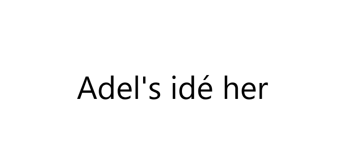

Projekter
produkt- og opgavebeskrivelse
Logbogen du læser lige nu er produktet for dette forløb, den er lavet på grundlag af HTML (HyperText Markup Language) med splinter af JavaScript (JS) og CSS (Cascading Style Sheets).
Denne logbog har en praktisk årsag for udførelse, den kan bruges til, at:
- Introducere til alle tre programmeringssprog (mest HTML).
- Introducere til design af hjemmeside(r).
- Træne programmering med trænge intervaller.
Tanker bag produktet
Jeg har tænkt tingene igennem nå jeg har lavet min logbog:- billederne fra original-versionen var pisse grimme og mega ufleksible, så jeg fjernede dem.
- Sort farve er mere brugt ud end hvid i form af hjemmesider, da en hjemmeside med hvid baggrund har en tendens til ikke at have en tiltænkt farve, derfor virker de hvide baggrunde også mere uproffesionelle.
- Mine bannere er der får at bringe mere af mig ind i min hjemmeside, da jeg har en tendens til, at skrive random lort på siderne i papirnotesbøger.
- I form af fornærmelser har jeg lagt provokerende citater i bannerne, jeg har også lavet en TOS der skal provokere brugeren med tanken om at de ikke har en skid at skulle have sagt når det kommer til min logbog.
- Jeg har prøvet et holde et sort-hvid-tema ved baggrund og pynt, så man lægger mærke til det der er vigtigt, nemlig noterne.
- Jeg har sørget for, at provokere brugeren i Indexet/forsiden, med ét stort off-message.
Gevindst ved påførelse
Fremstilling-af-logbogen opgaven har:- Trænet mig til, at skrive sammenhængende HTML.
- Lært mig, at flætte programmeringsprog sammen.
- Lært mig, at analysere andre hjemmesider passivt.
- Sørget for, at jeg er bekendt med forskellige termer der høre til programmering og Digital Design (DD).
Opgavebeskrivelse
lav en prototype til et IT-system, enten hjemmeside eller program.
Produktbeskrivelse
Billede #1 er det design vi brugte, billede #2 er det design vi i mente om hvorvidt vi skulle bruge den eller ej.
Case
Clevertouch skærmene står urørte i gangene på Slotshaven gymnasium.Spil - Udfordringsunderholdning
- Skal give brugeren mulighed for at spille en række af simple, open-source spil som f.eks. kryds og bolle, snake og solitaire
Citat - "få det bedre med dig selv"
- Skal give brugeren et citat fra en række citater, som er blevet gemt i databasen, citaterne må ikke være off-message eller provokerende, fordi det ville gøre, at vores program ville have en negativ effekt på brugeren.
Meme - Basisk underholdning
- Skal vise et meme, som er gemt i databasen, memesne vises en af gangen når brugeren klikker på meme-funktionen.
Produktkrav
- Skal have en database
- Skal kunne læse og fremvise databasens indhold
- Skal kunne downloades på clevertouchskærmene
- Skal være indbydende og derved gøre clevertouchskærmene mere attraktiv